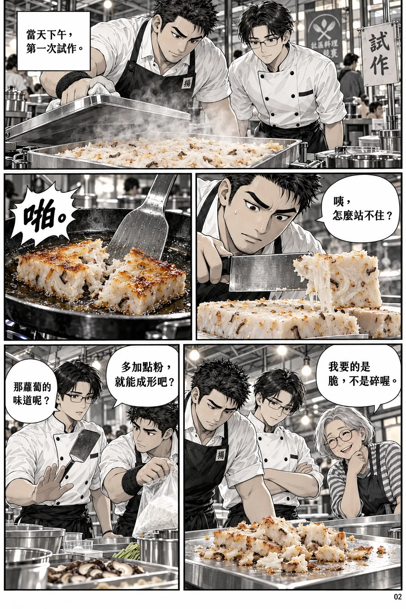
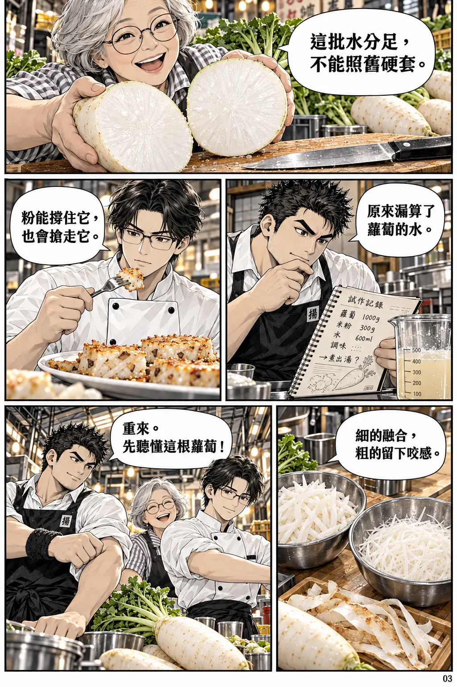
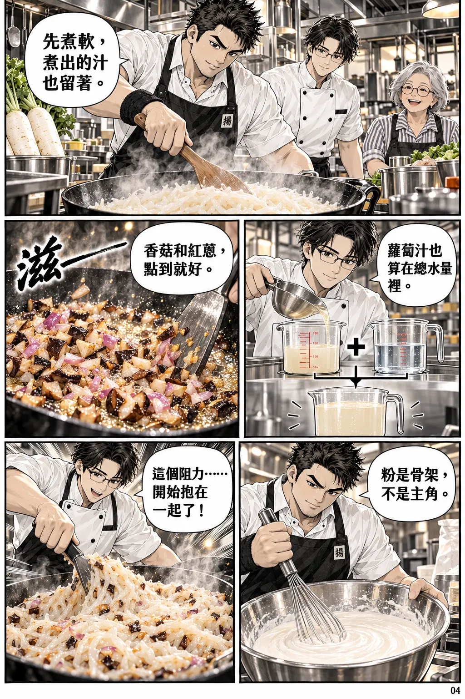
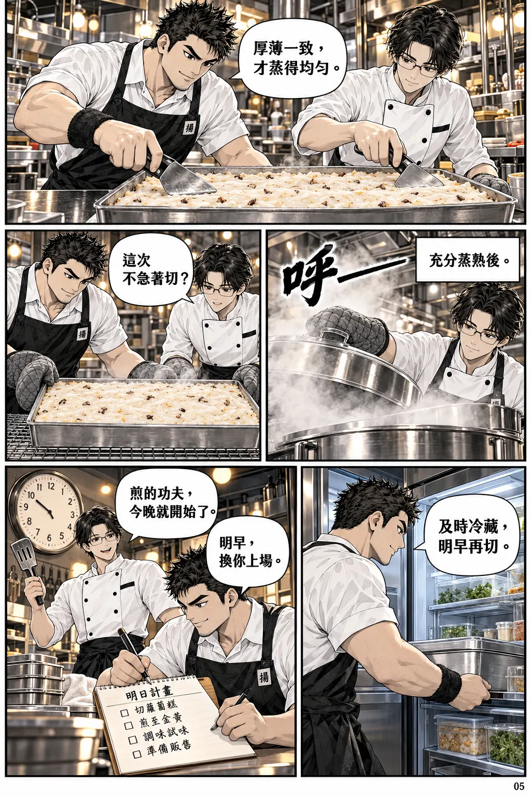
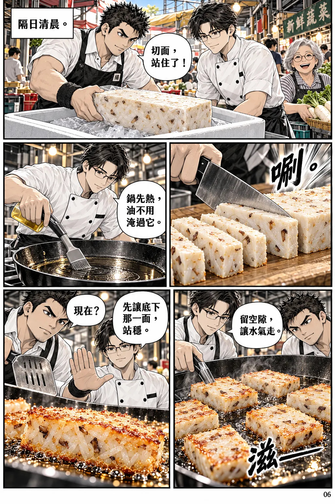
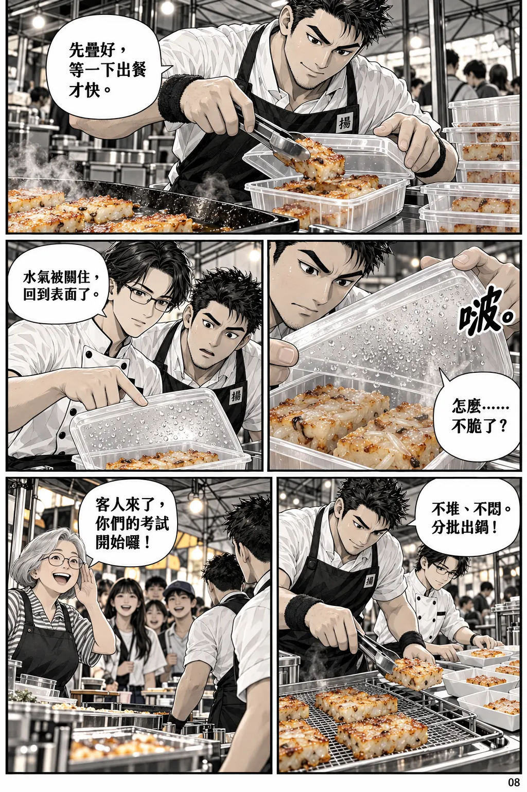
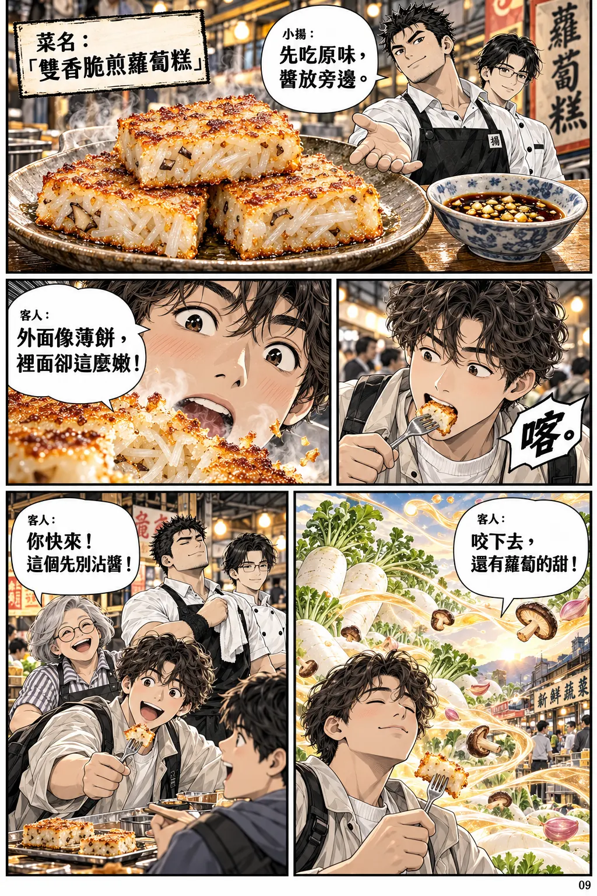

鍋鏟之約
01 / 12放大閱讀 ↗
本頁對白文字版
- 阿岳：「說好了，今天教你煎脆皮。」
- 小揚：「那我帶你挑好菜。」
- 蘭姐：「兩位大廚，敢不敢接一題？」
- 蘭姐：「明早做蘿蔔糕，讓年輕人也想吃。」
- 小揚：「外脆、裡嫩？交給我們！」
第一聲，碎了
02 / 12
放大閱讀 ↗
本頁對白文字版
- 旁白：「當天下午，第一次試作。」
- 小揚：「咦，怎麼站不住？」
- 音效：「啪。」
- 蘭姐：「我要的是脆，不是碎喔。」
- 小揚：「多加點粉，就能成形吧？」 阿岳：「那蘿蔔的味道呢？」
蘿蔔也有脾氣
03 / 12
放大閱讀 ↗
本頁對白文字版
- 蘭姐：「這批水分足，不能照舊硬套。」
- 小揚：「原來漏算了蘿蔔的水。」
- 阿岳：「粉能撐住它，也會搶走它。」
- 小揚：「細的融合，粗的留下咬感。」
- 小揚：「重來。先聽懂這根蘿蔔！」
把水算進去
04 / 12
放大閱讀 ↗
本頁對白文字版
- 小揚：「先煮軟，煮出的汁也留著。」
- 阿岳：「蘿蔔汁也算在總水量裡。」
- 音效：「滋——」 小揚：「香菇和紅蔥，點到就好。」
- 小揚：「粉是骨架，不是主角。」
- 阿岳：「這個阻力……開始抱在一起了！」
今晚，不搶快
05 / 12
放大閱讀 ↗
本頁對白文字版
- 小揚：「厚薄一致，才蒸得均勻。」
- 音效：「呼——」 旁白：「充分蒸熟後。」
- 阿岳：「這次不急著切？」
- 小揚：「及時冷藏，明早再切。」
- 阿岳：「煎的功夫，今晚就開始了。」 小揚：「明早，換你上場。」
第二天，翻面之前
06 / 12
放大閱讀 ↗
本頁對白文字版
- 旁白：「隔日清晨。」 小揚：「切面，站住了！」
- 音效：「唰。」
- 阿岳：「鍋先熱，油不用淹過它。」
- 阿岳：「留空隙，讓水氣走。」 音效：「滋——」
- 小揚：「現在？」 阿岳：「先讓底下那一面，站穩。」
金色的邊界
07 / 12放大閱讀 ↗
本頁對白文字版
- 小揚內心：「邊緣變乾，香氣也變了。」
- 阿岳：「能鬆動了。鏟到底下。」
- 小揚：「翻！」 音效：「唰！」
- 小揚：「完整！」 阿岳：「另一面也要煎透。」
- 旁白：「薄薄一層，守住裡面的柔軟。」
脆，不能關起來
08 / 12
放大閱讀 ↗
本頁對白文字版
- 小揚：「先疊好，等一下出餐才快。」
- 音效：「啵。」 小揚：「怎麼……不脆了？」
- 阿岳：「水氣被關住，回到表面了。」
- 小揚：「不堆、不悶。分批出鍋！」
- 蘭姐：「客人來了，你們的考試開始囉！」
第一口，不沾醬
09 / 12
放大閱讀 ↗
本頁對白文字版
- 菜名：「雙香脆煎蘿蔔糕」 小揚：「先吃原味，醬放旁邊。」
- 音效：「喀。」
- 客人：「外面像薄餅，裡面卻這麼嫩！」
- 客人：「咬下去，還有蘿蔔的甜！」
- 客人：「你快來！這個先別沾醬！」
兩人的節拍
10 / 12放大閱讀 ↗
本頁對白文字版
- 小揚：「下一鍋，六片！」 阿岳：「收到！」
- 音效：「滋、唰、喀！」
- 客人：「可以外帶嗎？」 小揚：「可以，趁熱最好吃。」
- 蘭姐：「嗯，這才吃得到我挑的蘿蔔。」
- 阿岳：「今天，算誰贏？」 小揚：「那籃蘿蔔吧！」
留下一個做法
11 / 12放大閱讀 ↗
本頁對白文字版
- 阿岳：「你還沒吃到完整的一片吧？」
- 音效：「喀！」 小揚：「這聲音，值得重來兩次。」
- 蘭姐：「把做法留下，市場才留得住這口香。」
- 阿岳：「只寫火候不夠。」 小揚：「也寫下為什麼。」
- 小揚：「下次換了蘿蔔，我們還能再調。」
下一道，會是什麼
12 / 12放大閱讀 ↗
本頁對白文字版
- 阿岳：「今天學到的，不只煎脆皮。」
- 小揚：「下一頁，一起寫？」 阿岳：「當然。」
- 訊息：「小揚，這碗湯的味道，你找得回來嗎？」
- 阿岳：「又有題目了？」 小揚：「這回，可能更難。」
- 旁白：「脆響之前，是每一步不肯省略的功夫。」 落款：「小揚料理帖・第二集｜脆響之前｜完」
關於這一集
這是現代台灣市場背景的原創料理漫畫。人物、事件與菜色均屬虛構，並非真人經歷或現售商品介紹。畫面由 AI 生成，採墨線、網點與暖色料理場景；人物、器物和文字細節可能有藝術化差異。
本篇是料理故事，不是完整食譜；圖中示意數量不作配方。實作請另參照可靠食譜與食品保存指引。圖片採高壓縮 WebP，附手機版本及逐頁放大。本站不使用外部字型、廣告或追蹤器。